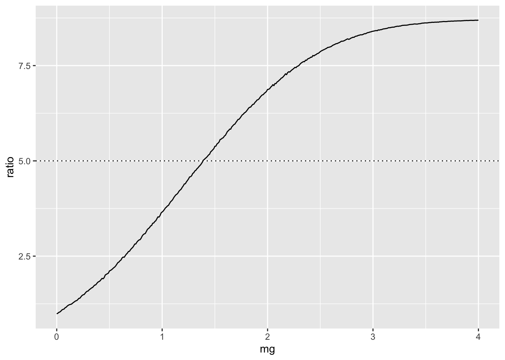
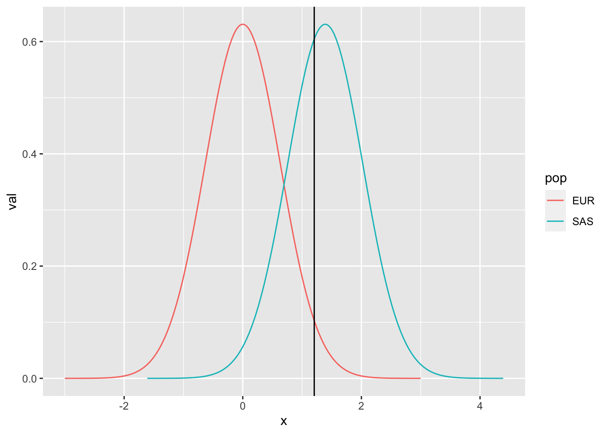

A <- matrix(c(1.54, 35, -1, 5), nrow=2, byrow=T)
b <- c(4.9, 0)
prev <- solve(A, b)
prev[1] 0.5737705 0.1147541Gibran Hemani
November 21, 2023
T2D rates are ~5x higher amongst South Asians than native British populations in Britain. Most likely due to environmental differences, but could it hypothetically be explained by differences in genetic architecture?
Assume polygenic common variant distribution and a disease liability threshold model.
Simultaneous equations:
\[ 4.9 = 1.54 x + 35y \]
where \(x\) is the prevalence amongst South Asians and \(y\) is the prevalence amongst white British
Also
\[ x = y * 5 \]
Calculate prevalences:
Assume threshold is the same in both populations. Establish a threshold based on European genetic architecture
Attaching package: 'dplyr'The following objects are masked from 'package:stats':
filter, lagThe following objects are masked from 'package:base':
intersect, setdiff, setequal, union88.52459%
1.204965 Estimate prevalence given a threshold when parameters change
[1] 0.13381Enumerate possibilities
param <- expand.grid(
mg = seq(0, 4, by=0.01),
vg = 0.4,
me = 0,
ve = 0.6,
thresh = thresh,
prev = NA
)
for(i in 1:nrow(param)) {
param$prev[i] <- sim2(param$mg[i], param$vg[i], param$me[i], param$ve[i], param$thresh[i])
}
param$ratio = param$prev / prev[2]
ggplot(param, aes(x=mg, y=ratio)) +
geom_line() +
geom_hline(yintercept=5, linetype="dotted")
This shows how much larger the mean of the genetic liability would have to be to lead to 5x prevalence
Comparison of distributions:
mg <- param$mg[which(param$ratio >= 5)[1]]
bind_rows(
tibble(pop="EUR", x=seq(-3, 3, length.out=1000), val = dnorm(x, sd=sqrt(0.4))),
tibble(pop="SAS", x=seq(-3+mg, 3+mg, length.out=1000), val = dnorm(x, m=mg, sd=sqrt(0.4)))
) %>% ggplot(., aes(x=x, y=val)) +
geom_line(aes(colour=pop)) +
geom_vline(xintercept=thresh)
Is it plausible in terms of just different allele frequencies?
R version 4.3.2 (2023-10-31)
Platform: aarch64-apple-darwin20 (64-bit)
Running under: macOS Ventura 13.6
Matrix products: default
BLAS: /Library/Frameworks/R.framework/Versions/4.3-arm64/Resources/lib/libRblas.0.dylib
LAPACK: /Library/Frameworks/R.framework/Versions/4.3-arm64/Resources/lib/libRlapack.dylib; LAPACK version 3.11.0
locale:
[1] en_GB.UTF-8/en_GB.UTF-8/en_GB.UTF-8/C/en_GB.UTF-8/en_GB.UTF-8
time zone: Europe/London
tzcode source: internal
attached base packages:
[1] stats graphics grDevices utils datasets methods base
other attached packages:
[1] dplyr_1.1.4 ggplot2_3.4.2
loaded via a namespace (and not attached):
[1] vctrs_0.6.4 cli_3.6.1 knitr_1.45 rlang_1.1.2
[5] xfun_0.41 generics_0.1.3 jsonlite_1.8.7 labeling_0.4.2
[9] glue_1.6.2 colorspace_2.1-0 htmltools_0.5.7 scales_1.2.1
[13] fansi_1.0.5 rmarkdown_2.25 grid_4.3.2 evaluate_0.23
[17] munsell_0.5.0 tibble_3.2.1 fastmap_1.1.1 yaml_2.3.7
[21] lifecycle_1.0.4 compiler_4.3.2 htmlwidgets_1.6.3 pkgconfig_2.0.3
[25] farver_2.1.1 digest_0.6.33 R6_2.5.1 tidyselect_1.2.0
[29] utf8_1.2.4 pillar_1.9.0 magrittr_2.0.3 withr_2.5.2
[33] tools_4.3.2 gtable_0.3.3